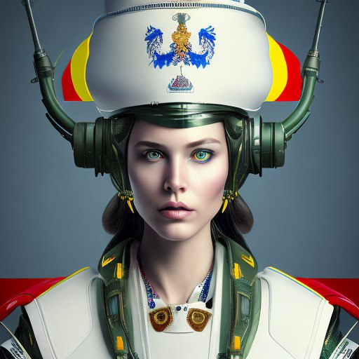
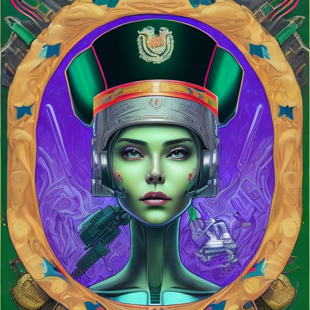

Россия

Итак, начнем с России. Катание на танках в Подмосковье организует компания КубинкаТур, одна из ведущих компаний на этом рынке, с большим опытом и разнообразием бронетехники. У них даже можно покататься на танке Т-34, легендарным танком времен Второй мировой войны. Т-34 был разработан в 1940 году и стал одним из наиболее массовых танков в истории. У КубинкаТур катание на танке доступно за разумную цену и является популярным видом развлечения не только для российских граждан, но и для иностранных туристов, посещающих Москву и Подмосковье.
Беларусь

В Белоруссии катание на танке доступно на историко-культурном комплексе «Линия Сталина» и Танковом полигоне "Ждановичи". Вы сможете покататься на танках, таких как Т-34, Т-55,ПТ-76, Т-44, БТР-80. БТР-80 - это бронетранспортер, который был разработан в Советском Союзе в 1980-х годах. Это транспортное средство может перевозить до 10 человек и имеет высокую проходимость по бездорожью.
Польша

В Польше катание на танке доступно в Tank Driving Poland, PanzerFun и Tank Driving Poland. Они предлагают катание на современных моделях танков, таких как T-55, T-72 и Leopard 1. T-55 - это советский танк среднего класса, который был разработан в 1950-х годах. T-72 - это советский танк, который был разработан в 1970-х годах. Leopard 1 - это немецкий танк, который был разработан в 1960-х годах. Катание на танке в Польше - это возможность узнать больше о технике и истории военных конфликтов.
Чехия
В Чехии катание на танке доступно на Tankodrom Milovice, Tankodrom и Tankodrom Hranice. В Чехии можно кататься на моделях танков, таких как T-72, BMP-1 и OT-64. BMP-1 - это советский боевой пехотный транспортёр, который был разработан в 1960-х годах. OT-64 - это боевая машина пехоты, которая была разработана в Польше в 1960-х годах. Катание на танке в Чехии - это возможность узнать больше о технике и истории военных конфликтов.
Германия
В Германии катание на танке доступно в PanzerFun, Panzerkutscher и Panzervermietung. В Германии можно кататься на моделях танков, таких как Leopard 1 и Leopard 2. Leopard 2 - это немецкий танк, который был разработан в 1970-х годах. Он считается одним из самых мощных танков в мире и используется в Германии и других странах мира.
Великобритания
В Великобритании катание на танке доступно в Tanks-Alot, Armourgeddon и Tank Driving Scotland. Вы сможете кататься танках таких моделей, как Chieftain и Abbott. Chieftain - это британский танк, который был разработан в 1960-х годах. Abbott - это британская самоходная гаубица, которая была разработана в 1960-х годах. Катание на танке в Англии - это возможность узнать больше о технике и истории военных конфликтов.
Австралия
Австралии доступно катание на танках в нескольких компаниях. Компания Australian Army Tank Adventures предлагает аренду танков модели M113, которые были широко использованы во время войны во Вьетнаме и до сих пор являются одними из самых популярных в мире. Компания Tanks For Everything предлагает катание на танке модели Centurion, которая использовалась во многих военных конфликтах, включая войну на Ближнем Востоке. Компания Tank Adventures предлагает аренду танков модели Sherman, который был широко использован во время Второй мировой войны и стал одним из самых узнаваемых танков в истории.
США
В США также предлагается катание на танках в нескольких компаниях. Компания Drive A Tank предлагает аренду танков модели M4 Sherman и M24 Chaffee, которые были широко использованы во время Второй мировой войны и являются настоящими легендами военной истории. Компания Battlefield Vegas предлагает катание на танках модели M60 Patton, который активно использовался во время войны во Вьетнаме. Компания Tank America предлагает аренду танков модели M1 Abrams, который является основным танком американской армии и считается одним из самых современных танков в мире.
Венгрия
Венгрия также предлагает катание на танках. В компании Tankparade вы можете кататься на советском танке T-55, немецком танке Leopard 1 и венгерском танке T-72. T-72 - это советский танк, который был произведен в Венгрии в 1980-х годах. Этот танк имеет высокую мощность и большую проходимость. Leopard 1 - это немецкий танк, который был разработан в 1960-х годах. Этот танк был использован в разных странах мира и считается одним из лучших танков своего времени.
Канада
В Канаде катание на танках так же доступно в компании Drive A Tank. Здесь вы можете кататься на американском танке M4A2 Sherman и в бронетранспортере FV432. M4A2 Sherman - это американский танк, который был разработан во время Второй мировой войны. Этот танк был массово произведен и использовался в разных военных конфликтах. FV432 - это британский бронетранспортер, который был разработан в 1960-х годах. Этот транспортер может перевозить до 10 человек и имеет высокую проходимость.
Япония
В Японии вы можете кататься на танке в компании Tanks A lot Japan. Здесь вы можете кататься на американском танке M4A3E8 Sherman и японском танке Type 74. Type 74 - это японский танк, который был разработан в 1970-х годах. Этот танк был использован в Японии и имеет высокую мощность и мобильность.
Египет
В Египте катание на танках доступно в компании Egyptian Tank Adventures. Здесь вы можете кататься на советском танке T-55 и советском бронетранспортере BTR-60. BTR-60 - это советский бронетранспортер, который был разработан в 1950-х годах. Этот транспортер может перевозить до 16 человек и имеет высокую проходимость.
Китай
В Китае катание на танках доступно в компании Tank Mania. Здесь вы можете кататься на советском танке Type 59 и китайском танке Type 96. Type 59 - это китайский танк, который был разработан на основе советского танка T-54. Type 96 - это китайский танк, который был разработан в 1990-х годах. Оба танка имеют высокую мощность и мобильность.
Мексика
В Мексике катание на танках доступно в компании Tank Driving Mexico. Здесь вы можете кататься на американском танке M4A1 Sherman и советском танке T-55. M4A1 Sherman - это американский танк, который был разработан во время Второй мировой войны. T-55 - это советский танк, который был произведен в 1950-х годах. Оба танка имеют высокую мощность и мобильность.
Бразилия
В Бразилии катание на танках доступно в компании Tank Driving Brazil. Здесь вы можете кататься на бразильском танке EE-9 Cascavel и американском танке M41 Walker Bulldog. EE-9 Cascavel - это бразильский бронетранспортер, который был разработан в 1970-х годах. M41 Walker Bulldog - это американский танк, который был разработан в 1950-х годах. Оба танка имеют высокую мощность и мобильность.
Вьетнам
Вьетнам предлагает катание на танках в компании Tank Driving Vietnam. Здесь вы можете кататься на советском танке T-54 и американском танке M41 Walker Bulldog. T-54 - это советский танк, который был произведен в 1950-х годах. Оба танка имеют высокую мощность и мобильность.
Филиппины
На Филиппинах катание на танках доступно в компании Philippine Tank Adventures. Здесь вы можете кататься на американском танке M41 Walker Bulldog и советском танке T-72. M41 Walker Bulldog - это американский танк, который был разработан в 1950-х годах. Этот танк имеет высокую мобильность и мощность. T-72 - это советский танк, который был произведен в 1970-х годах.